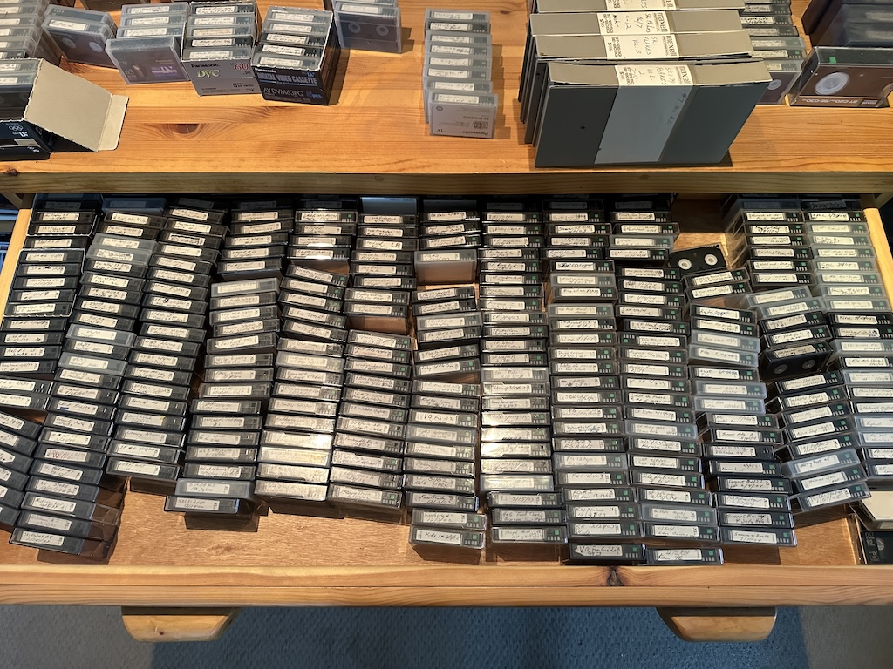
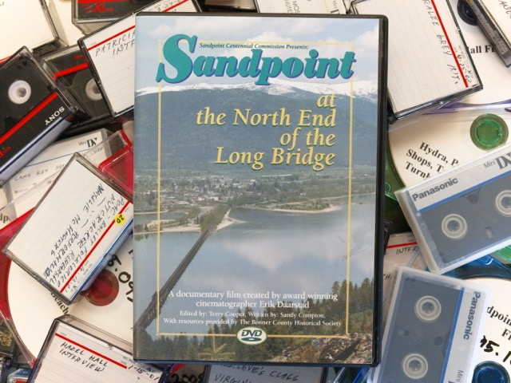

/// ARCHIVING
I’LL SEE YOU AGAIN IN 25 YEARS.
I've an interest in lossless video transfers workflows and backing up old videotapes.
Projects
- 2026 - 2099[ in progress ]

The Cooper Collection
A Sandpoint-based filmmaker has a massive collection of tapes -- 7000 hours of footage shot for local television programming. It is an incredible collection of North Idaho history. Since the footage spans several decades (80s to the 10s), it exists in several formats: VHS, S-VHS, VHS-C miniDV, HDV, DVCAM, and DVD. Currently, we are working to secure funding and get the ball rolling on this massive digitization project.
- 2025.12 - 2026.08[ archived ]

The Sandpoint Centennial Film
Successfully transferred about 200 hours of miniDV footage and interviews. These materials were shot by Erik Daarstad for a documentary celebrating the centennial of Sandpoint, Idaho.